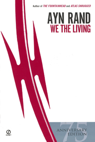
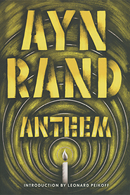
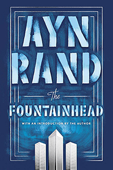
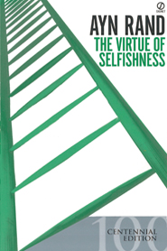

We the living (1936)

Anthem (1938)

The Fountainhead (1943)Atlas Shrugged (1957)Night Of January (1968)The Early Ayn Rand (1984)Three Plays (2005)Ideal (2015)
Non-Fiction
For The New Intellectual (1961)The Objectivist Newsletter (1962)

The Virtue of Selfishness (1964)Capitalism: The Unknown Ideal (1966)The Objectivist (1966)Introduction to Objectivist (1966)The Romantic Manifesto (1969)The New Left (1971)